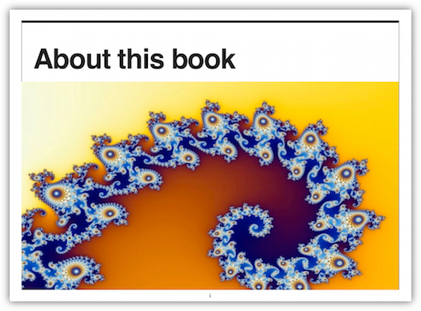
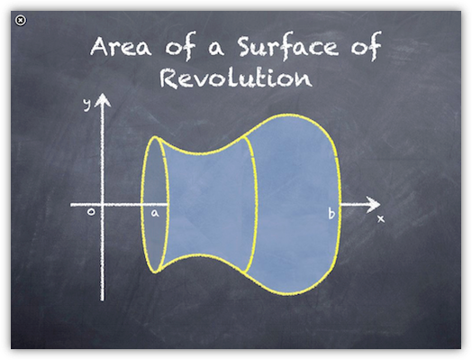
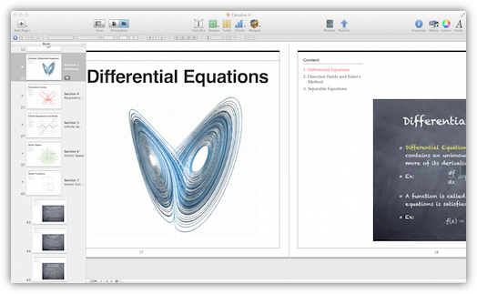

Monday, March 26th, 2012 8:33am
Saturday, March 17th, 2012 2:00pm
各位朋友，各位贵宾，
去年七月末，我在台湾独自旅行了一周。七天时间里，我每天都有说不尽的新鲜感受。在我离开台湾之后，我把这些旅途中的感想记录了下来，不料竟受到《旺报》编辑部的垂青予以发表，进而决定授予我这个奖。我觉得实在是荣幸之至，同时也惶恐之至。
要了解台湾，七天当然远远不够。我把主要的时间都花在了台北，也去了台东花莲，但是我知道在台湾还有大片美丽的土地我未曾涉足。好在来日方长，我相信也期待着以后能有更多机会深入台湾，了解台湾。
不过，对我这一代大陆人来说，「台湾经验」绝不是从亲自踏上台湾的土地的那一刻才开始的。从我的童年，少年开始，一直到青年时代，台湾从来都是一个既遥远，又亲切的地方。
我是大陆所谓「八零后」的一代。在我小的时候，没有一个同龄的孩子家里会没有小虎队的磁带和招贴画，也没有一个人会在谈及台湾这两个字的时候不心生向往。对当时正处于改革开放初期的中国大陆来说，台湾代表着一个遥不可及的成功幻影，一片像圣经里所说的「流奶与蜜」的地方。
后来我去北京求学，在我念书的学校，由已故的罗曼菲女士率领的「云门舞集二团」和吴兴国先生率领的台湾「当代传奇剧场」都曾经登台演出过，给我留下了几乎难于磨灭的深刻印象。那段时间正是大陆飞速崛起的十年，也是两岸交流日渐深刻的时代，来自台湾的声音不再遥远了。
我对台湾更深入的了解来自于大学时代的阅读。我就读的学校的图书馆里可以看到台湾的期刊，在我的印象里，那段时间的每一期《天下》和《远见》杂志我基本上都看过。我开始了解此前闻所未闻的一段历史，也开始熟悉像「蒋渭水」，「雷震」，「郑南榕」这样的名字。实事求是地说，在读到这些历史的时候，我常常是困惑的，有些困惑直到今天都还存在。但是也正是在这样的阅读里，台湾的形象变得更丰富了起来。
当然，再多的阅读也比不上亲自来台湾走上一趟。去年夏天的台湾之旅，让我把此前对台湾所有的了解，都打碎和重铸了一遍。
我对台湾印象最深刻的地方是什么？这是我后来常常被问起的问题，而我总是不知道该怎么回答。我在台湾的感受是如此庞杂，以至于好像如果要一言以蔽之，就总是会陷入言不及义的苦恼一样。
台湾作为一个热门的旅行目的地，当然有很多特色常常被人提起。台湾的小吃，台湾的风景，台湾的市井文化，都有它当之无愧的精彩之处。但是我常常觉得，如果人们爱一个地方，只是因为爱它的小吃，爱它的夜市，爱它的地标大楼，那人们一定是还不够爱它。
我自己碰巧是一个很喜欢旅行的人，我在美国和欧洲都居住过，也见过阿尔卑斯山的积雪和加勒比海的落日。让我说句老实话：太鲁阁的风景，台北的街市，都很好。但是我爱台湾，绝不仅仅是因为如此。
对我来说，台湾不止是这世界上某一个有意思的角落而已，它是一个独一无二的地方。我在台湾度过的每一天都在提醒我，我作为一个大陆人所承受、生长、熟悉以至于安身立命的这个民族和文化，还存在着怎样一种迥然相异的生活的可能性。它看起来又熟悉，又陌生，唯其如此，它的美才显得这么不可取代。
也正是因为如此，我一直在向我的每一个大陆的朋友热情地推荐台湾。每个人来台湾旅行都会有他自己的理由，可能是日月潭，太鲁阁，可能是台北故宫，诚品书店，也可能是蚵仔煎，滷肉饭。但是除此之外，我相信，仅仅是亲自在台湾的街头或者山间走一走，和台湾的朋友们聊聊天，喝杯茶，就已经会让人觉得不虚此行了。
当然，我也希望台湾的朋友们能去大陆看一看。我要在此替我的家乡做一个广告，我是陕西西安人，我相信，如果台湾的朋友有机会去一趟西安，看看华山和兵马俑，在城墙上散散步，也会觉得不虚此行的。
最后，我想再次感谢主办方的盛情厚意。谢谢大家。
Friday, January 27th, 2012 10:58am
众所周知，苹果刚刚推出了电子教材。我个人认为，这是苹果在电子书领域一次真正的冲锋。凡是了解美国教材市场的，都会明白这个功能远胜纸版而价格不到其平均教材四分之一的革命性教材有多重要。浏览过 iBookstore 上已经上架的样本教材后，我坚信它是会带来改变的。（不过不那么可喜的消息是我的一代 iPad 在打开拥有各种炫目效果的教材时颇为吃力，甚至死机了一次⋯⋯）
另一个没有那么醒目但是在我看来也很有趣的功能是免费的电子书制作软件 iBooks Author。这个软件允许作者自己把自己的作品拿到 iBook Store 上去卖，任何人都可以制作自己写的书然后绕过出版社去直接获利。当然，用这个软件做出来的效果没有那些非常炫的电子教材好看，但是也够用了。
所以我就花了两个小时，把我上学期自己的教学讲义做成了电子书，并且上传到了 iBook Store 里（我选择的是免费发放的模式）。在七天之后这本书终于成功上线，（事实上我到第四天才明白之前的上载出了错误，屏幕截图的尺寸不对，所以真正对方用来处理的时间只有三天。）这本书的下载链接在此，供各位参考。（我选择的是全世界范围都允许下载，但是据说此刻还是只有美国账号才能下载。我不知道这是暂时情况还是什么地方出了问题。）
我本来以为自己是第一个这么做的中国人（虽然这本书是用英文写的⋯⋯），但是后来我得知，事实上至少有另一个人比我更早吃到了螃蟹。不过，我们两人的情形类似，都是因为手上此前已经积累好了素材，所以才会这么方便。我的素材是大量 keynote 文件，而另外这位朋友是 Adobe InDesign 文件。基本上这也说明，把已有的素材移植到 iBooks Author 下是很方便的事情。




制作过程对任何熟悉 iWorks 界面的人来说都可以立即上手，如果手边有 iPad（一代即可），还可以随时上传到 iPad 上查看效果（但不能在电脑上查看效果）。制作完成后有两种主要的导出方式，一种是存为 .ibooks 文件，这是一种可以直接用 itunes 导入 iPad 的文件。如果做出来的电子书只需要在小范围流传，存成这种文件然后分享出去就可以了。如果希望上载到 ibookstore，就需要把它存成 .itmsp 文件，这是专门用来上载给 ibookstore 的文件格式。（除此之外也可以导出为 .pdf 文件，但这就失去电子书的意义了。）
要打开和处理 .itmsp 这种文件格式，需要另一个软件 iTunes Producer，可以在这个叫做 itunesconnect 的网站中的 Deliver Your Content 栏目中下载。这个软件可以把 .itmsp 文件上传到 ibookstore 的远程服务器。上传过程也是向导式的，需要填写一些书籍信息，准备几张屏幕截图就行了，并不复杂。上传完成后，可以在 itunesconnect 上查看自己上传的书籍的状态。再此后就是苹果远程服务器的事情了。需要说明的是他们并不会通知书籍上线的时间，要自己每天通过 iTunes 自己搜索自己的书来看有没有成功上线，实在是很弱智的办法。
这件事从我开始研究整个流程到成功完成一共也没多久，而且几乎不需要任何高端技术知识储备，大多数人都能胜任。当然，有些功能确实还谈不上太完善，比如电子书制作软件可选择的模板实在太少，而自定义格式也不算方便（和 iWeb 用起来感觉差不多，也就是说，纯粹是傻瓜式的，稍微复杂一点的功能就无法设置了）。不过如果一本书只有最简单的文字和图像，也没有复杂的排版，那这个软件基本上足够了。
另一个显而易见的缺陷是这个电子书只能在苹果的设备上使用，这当然是苹果的策略，但是我不知道这种把别家平板一概拒之门外的做法是不是能够长久。这是赢者全拿的策略，但是如果输了，也就会输得很惨。
我不知道国内能不能用到上面所有这些功能（特别是能不能用账号收钱），如果可以的话，我强烈建议各位自己试试看，把自己写过的小说剧本之类做成电子书（当然小心不要盗用版权），也许从明天开始，它们就能带来收入了呢。

{kind=link}
{kind=link}
{kind=link}
{kind=link}
{kind=link}
{kind=link}
{kind=link}
{kind=link}
{kind=link}
{kind=link}
{kind=link}
{kind=link}